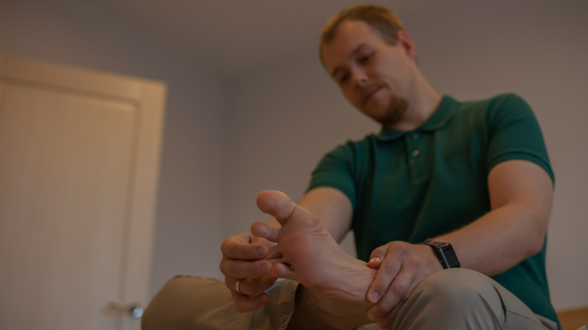

Cannes Standing Ovations Spark Debate Over 'Most Comfortable Footwear' for Premieres
What started as a rousing ten-minute ovation for a Lithuanian slow-burn about industrial collapse has now led to the most divisive conversation of the Cannes Film Festival: footwear.
"I was in awe of the cinematography, yes," said one anonymous journalist, "but by minute seven of applause, I was painfully aware of the fact that I chose form over function." The culprit? A pair of Brooks Ghost II running shoes, widely considered a solid choice for casual comfort but apparently not up to the challenge of marathon-level clapping.
Others claimed that standing ovations should come with disclaimers — or at least compression socks. "We need to consider rotating seats, standing-time limits, and perhaps orthopedic sponsorships," one publicist declared. "This is a film festival, not a CrossFit box."
Industry analysts are now tracking a new category for awards season buzz: Best Supporting Insole.
← Back to Homepage